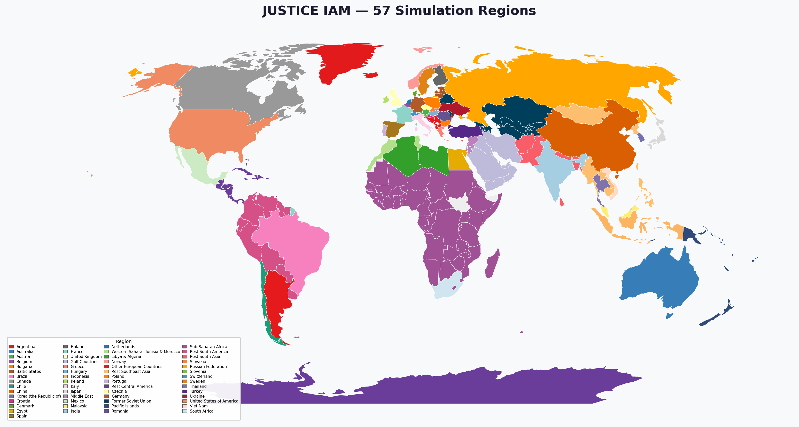

Lectures#
EPA141A has 13 lectures across 8 weeks. Lectures run Monday & Wednesday 13:00–15:00, followed by lab sessions 15:00–17:00.
20 & 22 April 2026
Lecture 1 — Introduction
Mon 20 Apr · Jazmin
After a short introduction to the overall course, we discuss the role of science-based models and knowledge in real-world decision-making. We discuss how assumptions behind models and the policy-relevant information gained with them may be ignored or questioned — and why a good report doesn’t necessarily have any impact on decision-making. Decisions are made in a complex policy battle wherein some actors participate and others do not, wherein some win and others lose. Actors have incentives to behave strategically and use any power source when felt applicable, in which science-based models may be nothing more than a resource.
This lecture also gives an overview of the assignments, final project, and debate exercise.
Required reading
Sarewitz, D. (2004). How science makes environmental controversies worse. Environmental Science & Policy, 7, 385–403. →
Stirling, A. (2010). Keep it complex. Nature, 468, 1029–1031. →
Turner, S. (2005). Expertise and political responsibility: The Columbia Shuttle catastrophe. In Maasen & Weingart (Eds.), Democratization of Expertise? Springer. →
Van Enst, W., Driessen, P., & Runhaar, H. (2014). Towards Productive Science-Policy Interfaces. Journal of Environmental Assessment Policy and Management, 16(1). →
Further reading
Tversky, A. & Kahneman, D. (1985). The framing of decisions and the psychology of choice. →
Rittel, H. W. J., & Webber, M. W. (1973). Dilemmas in a General Theory of Planning. Policy Sciences, 4(2), 155–169. →
Ackoff, R. A. (1979). The Future of Operational Research is Past. Journal of the Operational Research Society, 30(2), 93–104. →
Rayner, S. & Sarewitz, D. (2021). Policy making in the post-truth world. Breakthrough Journal, 13. →
Lecture 2 — Supporting decision-making under deep uncertainty
Wed 22 Apr · Jan
This lecture introduces exploratory modelling and its use for supporting decision-making under deep uncertainty (Robust Decision Making). A general taxonomy is presented, and we discuss how this taxonomy maps to the EMA Workbench.
Required reading
Walker, W.E., Marchau, V.A.W.J., Kwakkel, J.H. (2013). Uncertainty in the framework of Policy Analysis. In Thissen & Walker (Eds.), Public Policy Analysis: New Developments. Springer. →
Kwakkel, J.H. & Haasnoot, M. (2019). Supporting decision making under deep uncertainty: a synthesis of approaches and techniques. In Decision Making Under Deep Uncertainty. Springer. →
Bankes, S. C. (1993). Exploratory Modeling for Policy Analysis. Operations Research, 41(3), 435–449. →
Moallemi, E., Kwakkel, J.H., de Haan, F. & Bryan, B.A. (2020). Exploratory modeling for analyzing coupled human-natural systems under uncertainty. Global Environmental Change, 65. →
Further reading
Bankes, S. C. (2002). Tools and Techniques for Developing Policies for Complex and Uncertain Systems. PNAS, 99(3), 7263–7266. →
Lempert, R. J. (2002). A New Decision Sciences for Complex Systems. PNAS, 99(3), 7309–7313. →
Maier, H. R. et al. (2016). An uncertain future, deep uncertainty, scenarios, robustness and adaptation. Environmental Modelling & Software, 81, 154–164. →
29 April 2026
Lecture 3 — Open exploration: global sensitivity analysis
Wed 29 Apr · Jan
A key phase in robust decision making is understanding when and how various sources of uncertainty negatively affect the performance of a candidate strategy. There are two broad families of techniques for this so-called vulnerability analysis. This lecture focuses on global sensitivity analysis.
Required reading
Razavi, S. et al. (2021). The future of sensitivity analysis: An essential discipline for systems modeling and policy support. Environmental Modelling & Software, 137, 104954. →
Saltelli, A. et al. (2019). Why so many published sensitivity analyses are false: A systematic review. Environmental Modelling & Software, 114, 29–39. →
Jaxa-Rozen, M., & Kwakkel, J. H. (2018). Tree-based ensemble methods for sensitivity analysis of environmental models. Environmental Modelling & Software, 107, 245–266. →
Further reading
Cariboni, J. et al. (2007). The role of sensitivity analysis in ecological modelling. Ecological Modeling, 203, 167–182. →
Saltelli, A., & Annoni, P. (2010). How to avoid a perfunctory sensitivity analysis. Environmental Modelling & Software, 1508–1517. →
Pianosi, F. et al. (2016). Sensitivity analysis of environmental models: A systematic review. Environmental Modelling & Software, 79, 214–232. →
Note
Deadline: Assignments 1–3 due Friday 4 May, 17:00
4 & 6 May 2026
Lecture 4 — Open exploration: scenario discovery
Mon 4 May · Patrick
A key process in model-based decision support: understanding the conditions under which a model will generate a certain type of outcome — variously referred to as “subspace partitioning”, “rule induction”, or “scenario discovery”. The goal is to identify regions of the model’s input parameter space which generate a certain class of model outputs.
Required reading
Bryant, B. P., & Lempert, R. J. (2010). Thinking Inside the Box: a participatory computer-assisted approach to scenario discovery. Technological Forecasting and Social Change, 77(1), 34–49. →
Bonham, N., Kasprzyk, J., & Zagona, E. (2025). Taxonomy of purposes, methods, and recommendations for vulnerability analysis. Environmental Modelling & Software, 183, 106269. →
Further reading
Lempert, R.J. et al. (2006). A General, Analytic Method for Generating Robust Strategies and Narrative Scenarios. Management Science, 52, 514–528. →
Steinmann, P., Auping, W. L., & Kwakkel, J. H. (2020). Behavior-based scenario discovery using time series clustering. Technological Forecasting and Social Change, 156, 120052. →
Jafino, B. A., & Kwakkel, J. H. (2021). A novel concurrent approach for multiclass scenario discovery. Environmental Modelling & Software, 145, 105177. →
Lecture 5 — Role of science and knowledge in decision making
Wed 6 May · Tamara
We flip the perspective from the modeller to the policy practice. We explore how and why stakeholders and decision makers use knowledge, and why not. There are at least four ways knowledge can influence decision making: (1) speaking truth to power, (2) muddling through, (3) being strategically used, (4) becoming part of controversies.
In the policy lab following this lecture we engage in a negotiation game “win as much as you can” to explore the dynamics of negotiation and how to move toward collaboration and adaptive governance.
Required reading
Torgerson, D. (1986). Between Knowledge and Politics: Three Faces of Policy Analysis. Policy Sciences, 19(1), 33–59. →
Metze, T. (2017). Fracking the Debate: Frame Shifts and Boundary Work in Dutch Decision Making on Shale Gas. Journal of Environmental Policy & Planning, 19:1, 35–52. →
Further reading
Lindblom, C. E. (1959). The Science of “Muddling Through.” Public Administration Review, 19(2), 79–88. →
Huber, S. et al. (2026). How are energy modelling outputs used for climate policy innovation? (manuscript submitted)
Policy lab reading
Gupta, J. et al. (2010). The adaptive capacity wheel. Environmental Science & Policy, 13(6), 459–471. →
11 & 13 May 2026
Lecture 6 — How can science and decision making be connected?
Mon 11 May · Tamara
In this lecture, we explore what makes knowledge usable in decision-making. We look at different roles sciences can play in policy and political practice and discuss criteria for co-creating usable and scientific knowledge.
Required reading
Turnhout, E. et al. (2013). New roles of science in society: Different repertoires of knowledge brokering. Science and Public Policy, 40(3), 354–365. →
Ingold, J., & Monaghan, M. (2016). Evidence translation: an exploration of policy makers’ use of evidence. Policy & Politics, 44(2), 171–190. →
de Roo, N., Metze, T., & Leeuwis, C. University-led dialogues with society: balancing informing and listening? Journal of Science Communication. →
Lecture 7 — Directed search: many-objective optimisation
Wed 13 May · Jazmin
Vulnerability analyses rely on sampling. An alternative way to search through a large combinatorial space is to use many-objective optimisation. We focus specifically on the use of many-objective optimisation for finding promising strategies conditional on a reference scenario and for worst-case discovery.
Required reading
Maier, H. R. et al. (2019). Introductory overview: Optimization using evolutionary algorithms and other metaheuristics. Environmental Modelling & Software, 114, 195–213. →
Zatarain Salazar, J. et al. (2016). A diagnostic assessment of evolutionary algorithms for multi-objective surface water reservoir control. Advances in Water Resources, 92, 172–185. →
Kasprzyk, J. R., Reed, P. M., & Hadka, D. (2016). Battling Arrow’s paradox to discover robust water management alternatives. Journal of Water Resources Planning and Management, 142(2). →
Further reading
Reed, P. M. et al. (2013). Evolutionary multi-objective optimization in water resources. Advances in Water Resources, 51, 438–456. →
Coello, C. A. et al. (2007). Evolutionary algorithms for solving multi-objective problems. Springer.
Note
Deadline: Assignments 4–6 due Friday 18 May, 17:00
18 & 20 May 2026
Lecture 8 — Directed search: adaptation pathways — RBF focus
Mon 18 May · Jazmin
One response to uncertainty is to design policies that can be adapted over time in response to how the future actually unfolds. This week, the focus switches to the structure of a plan. The assignments focus on using exploratory modelling to design adaptive plans.
Required reading
Haasnoot, M. et al. (2013). Dynamic adaptive policy pathways: A method for crafting robust decisions for a deeply uncertain world. Global Environmental Change, 23(2), 485–498. →
Walker, W. E. et al. (2019). Dynamic Adaptive Planning (DAP). In Marchau et al. (Eds.), Decision Making Under Deep Uncertainty. Springer. →
Giuliani, M. et al. (2016). Curses, Tradeoffs, and Scalable Management: Advancing Evolutionary Multiobjective Direct Policy Search. Journal of Water Resources Planning and Management, 142(2). →
Additional optional reading
Zeff, H. B. et al. (2016). Cooperative drought adaptation. Water Resources Research. →
Michas, S. et al. (2020). A transdisciplinary modelling framework for dynamic adaptive policy pathways. Energy Policy, 139. →
Lecture 9 — Directed search: robustness considerations
Wed 20 May · Jan
We are interested in both good performance in individual scenarios and good performance over a set of scenarios. How can we include robustness within the search for promising candidate solutions? We discuss various robustness metrics and their relative merits, and various strategies for including robustness considerations in the search phase of MORDM.
Required reading
McPhail, C. et al. (2018). Robustness metrics: How are they calculated, when should they be used and why do they give different results? Earth’s Future. →
Watson, A. A., & Kasprzyk, J. R. (2017). Incorporating deeply uncertain factors into the many objective search process. Environmental Modelling & Software, 89, 159–171. →
Kwakkel, J. H., Haasnoot, M., & Walker, W. E. (2015). Developing dynamic adaptive policy pathways. Climatic Change, 132, 373–386. →
Further reading
Eker, S., & Kwakkel, J. H. (2018). Including robustness considerations in the search phase of MORDM. Environmental Modelling & Software, 105, 201–216. →
Kwakkel, J. H. et al. (2016). Comparing Robust Decision-Making and Dynamic Adaptive Policy Pathways. Environmental Modelling & Software, 86, 168–183. →
Herman, J. D. et al. (2015). How should robustness be defined for water systems planning? Journal of Water Resources Planning and Management, 141(10). →
27 May 2026
Lecture 10 — Case study: JUSTICE integrated assessment model
Wed 27 May · Jazmin & Palok
The tools you have been learning are actively used in state-of-the-art research on climate change. In this lecture, we apply sensitivity analysis, many-objective optimisation, and adaptive pathways to the JUSTICE model and work on the robust design and analysis of global climate mitigation pathways.
{kind=link}

Fig. 2 JUSTICE simulates 57 world regions across the RICE-50+ framework (2015–2300).#
Required reading
Nordhaus, W. D. (2017). Revisiting the social cost of carbon. PNAS, 114(7), 1518–1523. →
Lamontagne, J. R. et al. (2019). Robust abatement pathways to tolerable climate futures require immediate global action. Nature Climate Change, 9(4), 290. →
Marangoni, G. et al. (2021). Adaptive mitigation strategies hedge against extreme climate futures. Climatic Change, 166(3), 37. →
Additional optional reading
Butler, M. P. et al. (2014). Identifying parametric controls and dependencies in IAMs using global sensitivity analysis. Environmental Modelling & Software, 59, 10–29. →
Garner, G., Reed, P., & Keller, K. (2016). Climate risk management requires explicit representation of societal trade-offs. Climatic Change, 134(4), 713–723. →
Hänsel, M. C. et al. (2020). Climate economics support for the UN climate targets. Nature Climate Change, 10(8). →
Note
Deadline: Assignments 7–8 due Friday 1 June, 17:00
1 & 3 June 2026
Lecture 11 — Robust decision-making frameworks and decision support
Mon 1 Jun · Jan
Over the last weeks, you have been going through the various methods and techniques for supporting decision making under deep uncertainty. How can we put these methods together? How can we combine many-objective optimisation, scenario discovery, and ideas on adaptivity? And how can we enable non-analysts to interact with the results to support decision-making?
Required reading
Tsoukiàs, A. (2008). From decision theory to decision aiding methodology. European Journal of Operational Research, 187, 138–161. →
Bartholomew, E., & Kwakkel, J. H. (2020). On considering robustness in the search phase of Robust Decision Making. Environmental Modelling & Software, 127, 104699. →
Pot, W. et al. (2018). What makes long-term investment decisions forward looking. Technological Forecasting & Social Change. →
Kwakkel, J. H., Walker, W. E., & Haasnoot, M. (2016). Coping with the Wickedness of Public Policy Problems. Journal of Water Resources Planning and Management. →
Additional optional reading
Herman, J. D. et al. (2020). Climate Adaptation as a Control Problem. Water Resources Research. →
Woodruff, M. J., Reed, P. M., & Simpson, T. W. (2013). Many objective visual analytics. Structural and Multidisciplinary Optimization, 48, 201–219. →
Gong, M. et al. (2017). Testing the Scenario Hypothesis. Environmental Modelling & Software, 91, 135–144. →
Lecture 12 — Student Debate: Session 1
Wed 3 Jun · Jazmin & Jan
First session of the COP31 debate simulation. See Debate instructions.
Time |
Activity |
|---|---|
13:15–14:00 |
Bloc negotiations (six parallel meetings) |
14:00–14:45 |
Cross-bloc negotiation (open floor) |
14:45–15:15 |
Preliminary plenary (UNFCCC Chair presents draft agreement) |
10 June 2026
Lecture 13 — Student Debate: Session 2
Wed 10 Jun · Jazmin, Tamara & Jan
Final session of the COP31 debate simulation. See Debate instructions.
Time |
Activity |
|---|---|
13:00–13:15 |
UNFCCC Chair presents final draft agreement |
13:15–13:55 |
First round of debate |
13:55–14:15 |
Break — bilateral negotiations |
14:15–14:55 |
Second round of debate |
14:55–15:15 |
Clusters vote (majority of 4 required to adopt) |
15:15–15:25 |
Debrief |
Note
Final project deadline: Friday 19 June, 17:00